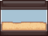
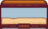
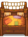

Fish Shop
| Fish Shop | |
 | |
| Open Hours: | 9am to 5pm |
| Closed: | Non-rainy Saturdays (Building Open, no sales) |
| Occupants: | |
The Fish Shop is the home of Willy. It's located on the docks of the Beach south of Pelican Town. The shop can be entered beginning on Spring 2 Year 1. Although the door will unlock on Saturdays, the shop will be closed unless it is raining, with the exception of Winter 13, the second day of SquidFest.
Willy sells a variety of fishing-related supplies, including rods, bait, tackle, fish tanks, and crab pots. Some items, such as tackles, become available once the player reaches a specific fishing level. Those items can be purchased as soon as the appropriate skill level is achieved, without needing to wait until the next day. Other items, such as the Copper Pan and the Deluxe Fish Tank, require the player to complete specific tasks to become available.
Stock
The following items are available as soon as the Fish Shop is open: Trout Soup, Targeted Bait, Bamboo Pole, Training Rod, Small Fish Tank, Large Fish Tank, Hanging Fish, and Fisher Double Bed.
| Image | Name | Description | Price | |
|---|---|---|---|---|
| Fish Smoker (Recipe) | A recipe to make Fish Smoker | N/A | ||
| Trout Soup | Pretty salty. | N/A | ||
| Bait | Causes fish to bite faster. Must first be attached to a fishing rod. | 2 | ||
| Deluxe Bait | Causes fish to bite even faster and increases size of the "fishing bar". | 4 | ||
| Targeted Bait | Increases your chance to catch [fish name].
Willy sells a limited quantity of one specific Targeted Bait (e.g. Catfish Bait, Sardine Bait) for double the bait's sell price each day. See the Targeted Bait section for more information. |
N/A | ||
| Crab Pot | Place it in the water, load it with bait, and check the next day to see if you've caught anything. Works in streams, lakes, and the ocean. | 3 | ||
| Sonar Bobber | Shows what fish is on the line before it's caught. | 6 | ||
| Spinner | The shape makes it spin around in the water. Slightly increases the bite-rate when fishing. | 6 | ||
| Trap Bobber | Causes fish to escape slower when you aren't reeling them in. | 6 | ||
| Lead Bobber | Adds weight to your "fishing bar", preventing it from bouncing along the bottom. | 6 | ||
| Treasure Hunter | Fish don't escape while collecting treasures. Also slightly increases the chance to find treasures. | 7 | ||
| Cork Bobber | Slightly increases the size of your "fishing bar". | 7 | ||
| Barbed Hook | Makes your catch more secure, causing the "fishing bar" to cling to your catch. Works best on slow, weak fish. | 8 | ||
| Dressed Spinner | The metal tab and colorful streamers create an enticing spectacle for fish. Increases the bite-rate when fishing. | 8 | ||
| Magnet | Increases the chance of finding treasures when fishing. However, fish aren't crazy about the taste. | 9 | ||
| Bamboo Pole | Use in the water to catch fish. | N/A | ||
| Training Rod | It's a lot easier to use than other rods, but can only catch basic fish. | N/A | ||
| Fiberglass Rod | Use in the water to catch fish. | 2 | ||
| Iridium Rod | Use in the water to catch fish. | 6 | ||
| Advanced Iridium Rod | Use in the water to catch fish. Up to two bobbers can be attached at once. (Available after obtaining one from the Mastery Cave) |
N/A | ||
| Copper Pan | Use to gather ore from streams. (Available after completion of Fish Tank bundle) |
N/A | ||
 |
Large Fish Tank | Can be placed inside your house. | N/A | |
| Small Fish Tank | Can be placed inside your house. | N/A | ||
 |
Deluxe Fish Tank | Can be placed inside your house. (Available after completion of Tropical Fish quest) |
N/A | |
| Hanging Fish | Can be placed inside your house. | N/A | ||
 |
Fisher Double Bed | Can be placed inside your house. | N/A |
Targeted Bait
Each day, Willy sells a limited quantity (8-12) of one Targeted Bait (e.g. Catfish Bait, Sardine Bait) for double the bait's sell price. The type of bait Willy sells depends on the season. Below is the list of all targeted bait Willy can sell in each season.
| Season | Possible Targeted Bait Sold |
|---|---|
| Anchovy Bait, Sardine Bait, Bream Bait, Largemouth Bass Bait, Smallmouth Bass Bait, Catfish Bait, Eel Bait, Flounder Bait, Stonefish Bait | |
| Pufferfish Bait, Tuna Bait, Sardine Bait, Bream Bait, Largemouth Bass Bait, Rainbow Trout Bait, Pike Bait, Red Mullet Bait, Octopus Bait, Super Cucumber Bait, Flounder Bait, Sturgeon Bait, Dorado Bait, Tilapia Bait, Ice Pip Bait | |
| Anchovy Bait, Sardine Bait, Bream Bait, Largemouth Bass Bait, Smallmouth Bass Bait, Salmon Bait, Octopus Bait, Catfish Bait, Eel Bait, Midnight Carp Bait, Tilapia Bait, Albacore Bait, Lava Eel Bait | |
| Tuna Bait, Sardine Bait, Bream Bait, Largemouth Bass Bait, Walleye Bait, Perch Bait, Catfish Bait, Pike Bait, Red Mullet Bait, Squid Bait, Super Cucumber Bait, Midnight Carp Bait, Sturgeon Bait, Albacore Bait, Lingcod Bait, Stonefish Bait, Ice Pip Bait, Lava Eel Bait |
Purchases
Willy will buy the following items from the player: All Fish, Bait, Tackle, Beach Forageables (except Seaweed), Roe, and Squid Ink.[1]
He will not buy any other catchable items (Trash, Green Algae, Seaweed, White Algae, Cave Jelly, River Jelly, or Sea Jelly). He will also not buy Aged Roe, Caviar, or Smoked Fish.
Player-Derived Stock
If the player chooses to sell items to Willy, there is a chance they will appear in the list of items for sale, especially if sold to Willy in large quantity. Any of these items will be available for purchase in limited quantities. Additional villager dialogues may appear indicating they've seen or purchased the items.
Bobber Machine
At the right of the Fish Shop is a Bobber Machine which allows players to choose different bobber styles. Along with selecting a specific bobber style, the player can also select a randomized option, which chooses a bobber for each cast at random from all of the unlocked options. Each bobber also can change the fishing line's color.
At the start of the game, only the default bobber style can be chosen. A new bobber style will unlock each time the player catches 2 new fish. Bobber styles are always unlocked in order. For example, the 10th bobber style will unlock after the player catches 18 different fish.
There are a total of 39 different bobber styles to unlock. To unlock all of the bobber styles, the player must catch a total of 76 different fish. There are a total of 77 different fish in the game (the 72 found in the Fish tab in the Collections menu and the 5 Legendary Fish II).
An additional bobber style can be unlocked by putting Lucky Purple Shorts in the tackle slot of a fishing rod.
Willy's Boat
Anytime after Summer 1 of Year 1, entering the Fish Shop (with or without Willy present) will trigger a "teaser" cutscene. In the cutscene, Willy chats with the player about their fishing progress, then mentions that business at the Fish Shop could be better. Willy says that he is working so hard, he has no time for his own projects. He says he has an "old friend" in the back who has seen better days. Willy then hints that if business picks up, he will show the player what he has in the back room.
When the player completes the Community Center Bundles or views the Joja Warehouse completion cutscene, Willy will mail the player an invitation to come to the back room of his shop. Upon entering the back room, the player finds a dock with an old boat that needs repair. The boat can provide transportation to and from Ginger Island at a ticket price of  1,000g, but Willy does not have the materials needed for repairs.
1,000g, but Willy does not have the materials needed for repairs.
To repair the boat, the player must provide:
 Hardwood (200) for the hull
Hardwood (200) for the hull Iridium Bar (5) for the anchor
Iridium Bar (5) for the anchor Battery Pack (5) for the ticket stand
Battery Pack (5) for the ticket stand
Once the player makes all 3 boat repairs, the game generates an overnight cutscene in which Willy and Robin work to restore the boat. Note that this cutscene is delayed a day if another overnight cutscene is scheduled for the same night.
Starting the day after viewing the boat repair cutscene with Willy & Robin, the player can buy a boat ticket in the back room. The Fish Shop door also unlocks at 8am instead of 9am. After getting the Key To The Town, the player can access the boat at any time in regular days. In both cases, Willy's own schedule does not change. He pilots the boat, but he becomes available automatically whenever the player purchases a ticket and doesn't need to be in the shop beforehand.
By fishing inside the boat room, there is a 20% chance to catch a Lifesaver.[2]
Trivia
- Interacting with the ladder at the back of the shop results in a message that suggests Willy lives upstairs.
- If the player attempts to enter the Fish Shop on Spring 1, Year 1, a note on the door says "Gone Fishing, be back tomorrow".
- After the shop is closed, Willy will return to the fish shop, usually at around 12:30am. Once he has returned to the shop, he will be at the counter. The player can still access his shop after this time when returning from Ginger Island or using the Key To The Town.
Gallery
Interior
References
History
- 1.0: Introduced.
- 1.04: Fixed bug where the shop was considered a water location.
- 1.4: Player-derived stock sold to Willy now appears in the Fish Shop menu instead of at Pierre's General Store. Added Training Rod and Copper Pan to shop stock.
- 1.5: Large Fish Tank, Small Fish Tank, Deluxe Fish Tank, and Fisher Double Bed added to shop stock. Introduced Willy's Boat.
- 1.6: Fish Smoker recipe, Deluxe Bait, Sonar Bobber, Hanging Fish, and limited-quantity Targeted Bait added to shop stock. Introduced Bobber Machine.
- 1.6.9: The player can now enter the shop beginning on Spring 2 even if they haven't read Willy's letter. Fixed bug that allowed fishing buffs to unlock shop items early. Can now purchase the Advanced Iridium Rod after obtaining one from the Mastery Cave.
| Buildings | ||
|---|---|---|
| Merchants | Abandoned House • Adventurer's Guild • Blacksmith • Bookseller • Carpenter's Shop • Casino • Desert Trader • Fish Shop • Giant Stump • Harvey's Clinic • Ice Cream Stand • Island Trader • JojaMart • Marnie's Ranch • Oasis • Pierre's General Store • Qi's Walnut Room • The Stardrop Saloon • Traveling Cart • Volcano Dwarf • Wizard's Tower | |
| Houses | 1 River Road • 2 River Road • 1 Willow Lane • 2 Willow Lane • 24 Mountain Road • Elliott's Cabin • Farmhouse • Island Farmhouse • Leah's Cottage • Mayor's Manor • Tent • Trailer • Treehouse | |
| Farm Buildings | Farming | Barn • Cabin • Coop • Fish Pond • Greenhouse • Mill • Pet Bowl • Shed • Silo • Slime Hutch • Stable • Well |
| Special | Desert Obelisk • Earth Obelisk • Farm Obelisk • Gold Clock • Island Obelisk • Junimo Hut • Water Obelisk | |
| Other Buildings | Community Center • Dog Pen • Island Field Office • Joja Warehouse • Movie Theater • Museum • Spa • Witch's Hut | |